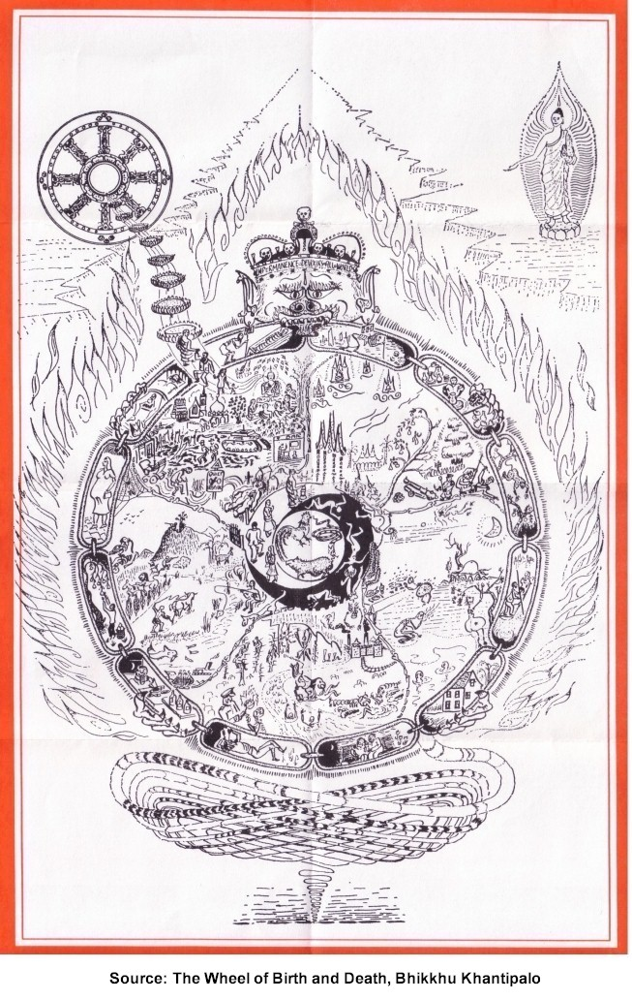
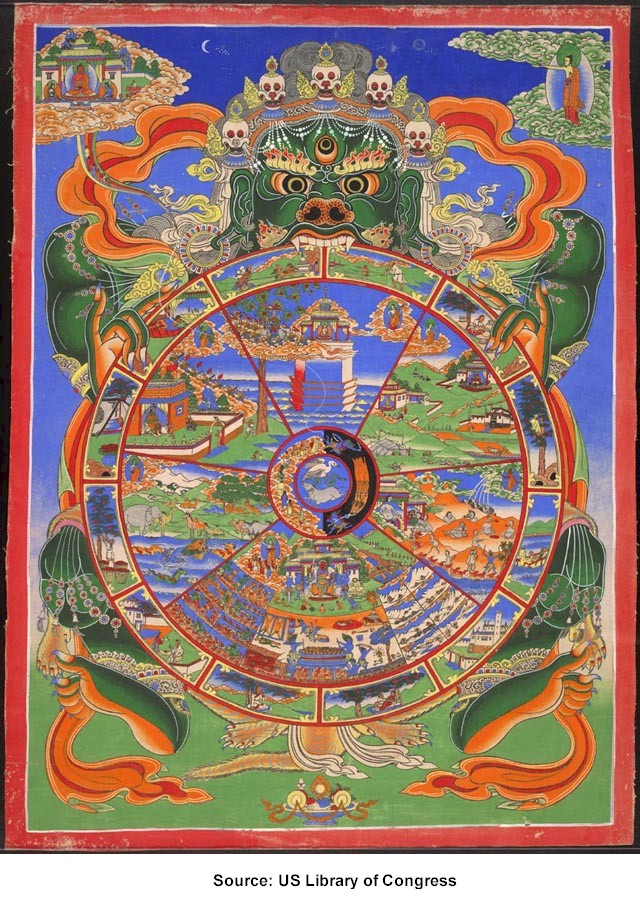

-ooOoo-
Hơn hai ngàn năm trăm năm về trước, trong ngày trăng tròn tháng Visàkha, có một đạo sĩ du phương tên Gotama (Cồ Đàm), vốn là Hoàng Tử Siddhattha (Sĩ Đạt Ta), đông cung thái tử của triều đại Sakỳa (Thích Ca), đã tự mình chứng ngộ và trở nên Toàn Giác do công phu minh sát trọn vẹn và đầy đủ Chân Lý gọi là Pháp (Dharmma), tức danh, phần tâm linh, và sắc, cơ thể vật chất này. Sự giác ngộ, hay thức tỉnh của Ngài, gọi là Chánh Biến Tri, đã tiêu trừ vô minh và ái dục, đã dập tắt tham ái, sân hận, si mê, trong tâm, và làm cho "nhãn kích phát sanh, tri kiến siêu phàm phát sanh, trí tuệ phát sanh, sự khám phá phát sanh, ánh sáng phát sanh". Một công trình minh sát trọn vẹn và thấu đáo đi sâu vào danh và sắc, nguồn gốc của danh-sắc, sự chấm dứt danh-sắc, và con đường dẫn đến sự chấm dứt danh-sắc ấy. Và đó là thông suốt trọn vẹn và thấu đáo thế gian, sự chấm dứt thế gian, và con đường dẫn đến sự chấm dứt thế gian. Sau bao nhiêu năm trường kiên trì cố gắng và trong suốt đêm chú tâm minh sát, từ một người đi tìm chân lý Ngài trở thành "Người Hiểu Biết", "Người Chứng Ngộ". Về sau, khi có cơ hội giải thích sự khám phá vĩ đại ấy, Ngài trình bày bằng nhiều phương cách khác nhau để cho mỗi người nghe đều có thể lãnh hội. Và như thế, để giúp cho mỗi người, tùy căn cơ và trình độ hiểu biết của mình, có thể đặt nhẹ gánh xuống bên đường. Với trí tuệ siêu phàm Ngài thông suốt tận tường những gánh nặng ấy là gì, mặc dầu lắm khi chính người mang gánh nặng trên vai lại không hiểu biết gì về gánh nặng ấy, với tâm bi mẫn vô lượng, Ngài truyền dạy Giáo Pháp cho những ai muốn bỏ gánh nặng xuống. Những gánh nặng mà con người – đúng ra là tất cả chúng sanh – phải khuân vác quanh quẩn theo mình ngày nay không có gì khác biệt với những gánh nặng của người ở vào thời của Đức Phật. Bởi vì trong hiện tại cũng như vào lúc thời bấy giờ, con người vẫn bị ái dục và vô minh đè nặng trĩu trên vai. Con người không thấu đạt Tứ Diệu Đế và Thập Nhị Nhân Duyên, con người bám bíu, đeo níu theo núi lửa và thuốc độc của ngày nay cũng như thuở nào, và con người bị lo âu sợ sệt làm tiêu mòn, sụp đổ. Đức Thế Tôn, người đã thành đạt mức châu toàn, dạy rằng:
Tình trạng không thông suốt định luật Tùy Thuộc Phát Sanh (Thập Nhị Nhân Duyên) là nguyên nhân của mọi phiền não mà tất cả chúng sanh phải chịu. Đó là công thức quan trọng nhất mà sự giác ngộ của Đức Phật đã trình bày một cách chính xác. Vậy đối với người Phật tử, là phải nhìn thẳng vào trung tâm của pháp này. Đây là việc làm tối quan trọng, tối cần thiết. Và nhìn vào, không phải bằng cách đọc sách, đọc kinh, hay bằng cách trở thành một chuyên viên nghiên cứu về Tam Tạng, và cũng không phải bằng cách tranh luận giữa quan niệm của mình và kẻ khác, mà phải là quan sát và thấy rõ sự Tùy-Thuộc-Phát-Sanh trong đời sống của chính mình, phải bám sát vào pháp gom tâm vắng lặng và minh sát trong "danh" và "sắc" của chính mình.
Bây giờ, hãy nhìn xem giáo huấn này liên quan đến đời sống của chúng ta như thế nào? Dầu ở trong trạng thái hay cảnh giới nào -- người hay không phải người – tất cả chúng sanh đều mưu tìm hạnh phúc. Nhưng điều quan trọng cần phải biết là: yếu tố nào đem lại đau khổ, để lẩn tránh, và yếu tố nào đem lại hạnh phúc, để cố gắng phát triển và trau giồi. Đó là lập lại Tứ Diệu Đế bằng một lối khác. Đoạn đầu của câu trên đề cập đến đau khổ, cái gì không bao giờ toại nguyện, mà trong tiếng Phạn gọi là dukkha. Dukkha (khổ) này là Chân Lý Thâm Diệu (Diệu Đế) đầu tiên mà chúng ta kinh nghiệm một cách liên tục, từng giây từng phút, nhưng thường thì chúng ta không ghi nhận và không hay biết được. Và điều này – không ghi nhận và không hay biết – không làm cho dukkha suy giảm chút nào! Trước tiên, có những đau khổ phát sanh tùy cơ hội, như sanh, bệnh, lão, tử, vì những diễn biến này không bao gồm trọn vẹn đời sống. Kế đó có những đau khổ thường xuyên, như phải kết hợp với người mà ta không ưa thích, xa lìa người hay vật hay hoàn cảnh mà ta ưa thích, không thành đạt những gì mong muốn. Và đó là những việc thường xảy ra hằng ngày. Cuối cùng, để tóm lược, có sự đau khổ liên tục, bao hàm tất cả các loại đau khổ (dukkha): đó là ngũ uẩn thủ, tức chấp thủ vào năm nhóm: cơ thể vật chất (sắc), cảm giác (thọ), tri giác (tưởng), sanh hoạt của tâm (hành) và thức. Đó là năm yếu tố cấu thành chúng sanh. Nếu phải giải thích đầy đủ ở đây sợ e quá dài, tuy nhiên, mỗi người đọc đều có thể được cung ứng dồi dào các loại đau khổ ấy trong chính bản thân mình. Mỗi người phải tự chính mình, nhìn và quan sát, nhận thức xem những gì mình đã kinh nghiệm trong đời sống có đáng được thỏa thích hay không. Pháp này phải được "thông suốt trọn vẹn" trong chính bản thân và trong chính đời sống của mình, nơi mà Diệu Đế đầu tiên phải được khám phá. Kế đó là những yếu tố đem lại sự bất toại nguyện, đau khổ, tức không-hạnh phúc. Nơi đây cũng vậy, con người và đời sống phải được quan sát thận trọng. Khi có những chúng sanh bị tôi sát hại, khi tôi lấy một vật gì chưa được cho, khi tôi có hành động tà dâm, khi tôi nói lời giả dối, khi tôi dùng những chất độc làm cho tâm trở thành dễ duôi, bất cẩn, phóng dật – đó là những yếu tố đem lại hạnh phúc hay bất toại nguyện? Khi tôi đem lòng tham muốn vật sở hữu của kẻ khác, khi tôi để tâm chứa chấp những ý tưởng oán ghét, hận thù, khi vô minh, tà kiến, và những quan kiến sai lầm khác làm chủ tâm tôi – đó là những yếu tố đem lại an lành hay hoại diệt cho tôi? Có rất nhiều phương cách để diễn tả các yếu tố tai hại ấy, nhưng tất cả đều bắt nguồn từ vô minh và ái dục. Và vô minh và ái dục cũng chỉ là hai khía cạnh của mỗi một việc. Đó là Diệu Đế thứ nhì, đề cập đến nguồn gốc hay sự Phát Sanh của dukkha, đau khổ, bất toại nguyện. Khi ái dục hoạt động, khi vô minh bao trùm sự hiểu biết của ta như đám mây mờ, lúc ấy chắc chắn chúng ta đang kinh nghiệm đau khổ. Vì lợi ích cho ta và cho kẻ khác, lời giáo huấn của Đấng Từ Phụ là ái dục ấy "phải được diệt tận". Phần nhì của câu được nêu trên đề cập đến hạnh phúc. Có nhiều loại hạnh phúc. Hai loại tùy thuộc điều kiện, được chứng nghiệm đó đây trong thế gian và loại thứ ba, không tùy thuộc điều kiện, không do điều kiện nào nâng đỡ hay hỗ trợ, "phải được chứng ngộ". Tất cả chúng ta đều mưu tìm hạnh phúc. Vậy, hãy tìm xem ta phải cần những gì? Đầu tiên, có loại hạnh phúc do vật chất tạo nên, phát sanh từ quyền sở hữu và việc khéo xử dụng thủ đoạn với những điều kiện của cuộc sống "ngoài đời". Loại hạnh phúc này, được gọi là àmisa sukha, quả thật bấp bênh, không có gì chắc chắn vững bền, bởi vì tất cả những yếu tố nâng đỡ, hỗ trợ nó đều tạm bợ và biến đổi không ngừng. Lại nữa, nó nằm ở nơi thế tục, ở ngoại cảnh, chớ không phải ở trong tâm ta và như vậy, cần phải có tài năng tinh xảo kỳ diệu mới cứu ta thoát khỏi dukkha, đau khổ. Và chúng ta không thể tránh khỏi những thất bại, thất vọng, bất mãn, nếu cứ mãi mãi chạy theo loại hạnh phúc vật chất ấy. Đó là loại hạnh phúc ngắn ngủi, nhất thời. Trên một tầng lớp cao thượng hơn nhiều là hạnh phúc đến với ta bằng cách thực hành Giáo Pháp, được gọi là hạnh phúc phi-vật-chất hay niràmisa-sukha, hạnh phúc tinh thần đạo đức. Hạnh phúc này phát sanh đến người tạo đầy đủ mười thiện pháp là: bố thí, trì giới, hành thiền, tôn kính bậc trưởng thượng, tạo công đức phục vụ, hồi hướng phước báo đến người khác, nghe Giáo Pháp, dạy Giáo Pháp, và củng cố quan kiến theo chánh pháp. Người thực hành Giáo Pháp này, thanh lọc tâm như vậy, chắc chắn sẽ gặt hái hạnh phúc. Tuy nhiên, ta không thể mãi mãi ỷ lại vào loại hạnh phúc này mặc dầu nó vững bền và cao thượng hơn loại trước nhiều. Do quả báo của nó ta có thể hưởng một kiếp sống thật lâu dài, nhàn nhã, giữa những vị Trời, hay sanh làm người có thật nhiều may mắn. Nhưng, dầu ở cảnh Trời, dầu có được tuổi thọ thật dài đi nữa, rồi cũng phải mạng chung, khỏi cần đề cập đến cảnh người. Vả lại, những hậu quả của nghiệp, dầu tốt hay xấu, đều là vô thường, nghĩa là luôn luôn biến đổi. Như vậy ta không thể ỷ lại vào những quả ấy để mưu tìm hạnh phúc thường còn, không biến đổi. Muốn có hạnh phúc trường cửu phải tận diệt trọn vẹn nguồn gốc của dukkha, đau khổ. Khi ái dục đã bị tiêu trừ tận căn cội, đau khổ không còn phát sanh được nữa. Trái lại, nhờ trong sạch, từ bi và trí tuệ, ta đạt đến hạnh phúc tối thượng của Niết Bàn, bền vững, không thể hoại diệt, không thể biến đổi. Đó là Diệu Đế thứ ba, sự chấm dứt đau khổ, bằng cách diệt trừ nguồn gốc của nó. Để thành đạt cái "cần phải được chứng ngộ" ấy có nhiều việc phải làm, và những việc phải làm ấy phải theo một đường lối chân chánh, do đó, Diệu Đế thứ tư, Đạo Đế. Đế này được gọi là Chân Lý của Con Đường, và Con Đường này "phải được phát triển". Con Đường gồm những thành phần của trí tuệ: chánh kiến, chánh tư duy; những thành phần của giới đức: chánh ngữ, chánh nghiệp, chánh mạng; và những thành phần của pháp hành thiền định: chánh tinh tấn, chánh niệm, chánh định. Nơi đây sẽ không giải thích những thành phần này. Người thực hành Giới, Định, Tuệ chắc chắn sẽ có những điều kiện để duy trì hạnh phúc. Nhờ thực hành như vậy hành giả có thể đạt đến hạnh phúc tinh thần đạo đức gọi là hạnh phúc của Giáo Pháp, hoặc hạnh phúc Tối Thượng, tùy theo mức độ tiến triển. Muốn thành đạt hạnh phúc Niết Bàn cần phải gia công cố gắng thật nhiều để phát triển cả hai lối thiền, thiền vắng lặng (samatha) và thiền minh sát (vipassanà). Tứ Diệu Đế, hay bốn Chân Lý Thâm Diệu ấy – khổ, nguyên nhân sanh khổ, diệt khổ, và con đường diệt khổ - là trung tâm của Giáo Pháp, phải nằm trong lòng của mỗi ai muốn nhận thấy. Do nhận thấy và hiểu biết thấu đáo Tứ Diệu Đế, hạnh phúc sẽ đến, nhưng cố tìm cách lẩn tránh thì đau khổ sẽ phát sanh. Bốn Chân Lý ấy, trình bày trong công thức "Tùy Thuộc Phát Sanh", đã được giải thích bằng nhiều phương cách. Hình thức giản dị nhất là:
Tuy nhiên, có thể giải thích dông dài và đầy đủ hơn. Nguyên tắc quan trọng để thấu hiểu rõ ràng pháp Thập Nhị Nhân Duyên, hay Phát Sanh Tùy Thuộc, là nhận định rằng tất cả những gì mà ta chứng nghiệm đều do điều kiện phát sanh (duyên sanh). Hãy lấy thân này làm thí dụ. Từ lúc mới lọt lòng mẹ là một trẻ sơ sinh, rồi dần dần lớn lên, phát triển dần những đặc tánh để trở nên thuần thục cho đến khi bị tuổi già bám vào, làm cho cơ thể tàn phế, cách này hay cách khác, và cuối cùng, chết. Tiến trình điều hành sự trưởng thành và tàn lụi thật vô cùng phức tạp và tương quan chằng chịt với nhau. Muốn giữ thân được trọn vẹn, tối thiểu cần phải có y phục, thức ăn, chỗ ở và thuốc men. Nhưng một khi những phản ứng hóa học bên trong (cũng phải tùy thuộc phát sanh) bắt đầu tiến trình, dẫn đến tuổi già và hoại diệt, không có điều kiện hỗ trợ nào từ bên ngoài có thể giúp gì hơn là làm cho tiến trình ấy chậm trễ đôi chút. Cơ thể vật chất này, xem như một đơn vị, không thể phát sanh từ không-nguyên-nhân (những tinh trùng vật chất là nguyên nhân trực tiếp), cũng không thể phát sanh từ một nguyên nhân duy nhất. Quan sát tỉ mỉ và tận tường, không có gì ta chứng nghiệm mà phát sanh từ một nguyên nhân duy nhất hay không nguyên nhân. Trái lại, những gì ta thọ cảm đều chằng chịt tùy thuộc lẫn nhau. Như sự thấy của ta chẳng hạn, phải tùy thuộc ở nhãn căn, tức mắt, nhãn trần, tức vật để thấy, đối tượng của sự thấy và hoạt động của nhãn thức, (ngoài ra còn có những yếu tố khác góp phần vào như ánh sáng, không khí v.v…). Tương tự như sự thấy ấy, tai, âm thanh, nhĩ thức; mũi, mùi và tỉ thức; lưỡi, vị và thiệt thức; thân, xúc và thân thức; và tâm hay ý, tư tưởng, hay pháp, và ý thức. Tất cả những gì ta thọ cảm đều nằm trong mười tám nguyên tố (hay giới) ấy, và ngoài các nguyên tố ấy ta không còn biết gì khác. Điều quan trọng cần nên nhận thức là phần lớn những gì ta thọ cảm đều phát sanh tùy thuộc lẫn nhau và đều là hậu quả của hành động nào chính ta đã làm trong quá khứ. Hạnh phúc mà ta hưởng hay đau khổ mà ta chịu, mặc dầu đến với ta do những diễn biến của thế gian vật chất bên ngoài (như động đất, bão, lụt, trời mưa, trời nắng v.v…) vẫn thường phát sanh do những hành động có tác ý (nghiệp) của ta trong quá khứ. Và trong hiện tại, với mỗi hành động có ý thức, ta đang tạo nghiệp mới. Nghiệp này sẽ phối hợp với nghiệp sẵn có để đem lại quả mà ta sẽ gặt hái trong tương lai. Như vậy, muốn thọ cảm hạnh phúc, muốn gặt hái quả ngọt, ta phải gieo trồng từ bây giờ những hột giống tốt. Cây có thể cho trái tức khắc, trong kiếp sống hiện tại, hay trong một kiếp sống tương lai. Ta làm ra ta. Ta là người tạo ra ta, không có bàn tay nào của ai khác. Và đấng Thần Linh Tạo Hóa không phải ai khác hơn là Vô Minh, hay sự không hiểu biết. Vô Minh là đấng Tạo Hóa đã tạo nên bánh xe luân hồi và những hình thức liên tục và khác nhau vô cùng tận của sự đau khổ. Đấng Tạo Hóa ấy ngự trong tâm của tất cả những ai còn được gọi là "phàm nhân", những chúng sanh trong tam giới (Dục, Sắc và Vô Sắc Giới). Chúng ta sẽ trở lại vấn đề với nhiều chi tiết hơn. [^]
Pháp "Phát-Sanh-Tùy-Thuộc" hay Thập Nhị Nhân Duyên được giải thích nhiều lần và được ghi chép ở nhiều nơi trong những bài thuyết giảng của Đức Phật, nhưng Ngài không so sánh với bánh xe. Sự so sánh này được thấy trong sách Visudhimagga (Thanh Tịnh Đạo) và các bản chú giải khác. Mặc dầu kinh điển theo truyền thống Theravàda (Nguyên Thủy) có nhiều đoạn nhắc đến, nhưng hình như pháp này không được mô tả như một bánh xe. Nhưng ở miền Bắc Ấn Độ, và đặc biệt ở Kashmir, trường phái Sarvàstivàda (¹) (Thuyết nhất thiết hữu bộ, hay thường gọi tắt là Hữu bộ) đã được thiết lập vững chắc, ngoài ra nhiều kinh sách về Giới Luật và Vi Diệu Pháp (Vinaya và Abhidhamma) cũng có một lối vẽ theo hình bánh xe để mô tả giáo lý rất quan trọng của pháp Thập Nhị Nhân Duyên. Bánh xe ấy là đề tài của bản khái luận này. Danh từ Pàli Bhava-cakka hay Samsàra-cakka, có khi được phiên dịch là Bánh Xe của Đời Sống, có lúc cũng được gọi là Bánh Xe của sự Trở Thành (Bhava, Hữu) hay Bánh Xe của Vòng Quanh Sanh Tử (Samsàra, Luân Hồi). Bộ kinh Avadàna, thuật lại các tích truyện về Đức Phật và các đệ tử, có một quyển mở đầu bằng tích truyện về bánh xe này. Người đọc thấy rằng tích truyện về bánh xe nhắc lại thời Đức Phật còn tại thế, và có ghi nhận rằng Ngài đã có cho vẽ hình bánh xe và cũng có lời chỉ bảo về nội dung của bánh xe. Chắc chắn là vào thời ấy người ta đã biết xử dụng bộ môn hội họa (đã có nhiều lần được ghi nhận trong Giáo Pháp và Giới Luật). Ngoài ra, các sự kiện khác được nêu lên trong lời mở đầu ngắn ngủi ấy đều thích hợp với tinh thần kinh điển Pàli. Theo vài học giả, bộ kinh này đã được kết tập trước thời có Dương lịch. Vậy, nếu ta không tin rằng Đức Phật đã chỉ bảo lối vẽ bánh xe ấy thì ít ra, bánh xe này cũng được vẽ ra vào khoảng hai ngàn năm nay. Hai ngàn tuổi đầu âu cũng là một tập tục khả kính vậy! Về những gì có tác dụng giúp ta thấu hiểu giáo lý, lối diễn đạt những phương tiện lành (upàya-kosalla) này chắc chắn là lâu đời nhất. [^] "Thủa ấy Đức Thế Tôn ngự tại thành Ràjagaha (Vương Xá), trong vùng Trúc Lâm, chỗ nuôi sóc. Lúc bấy giờ Đức Mahàmoggallàna (Mục Kiền Liên) thường đi viếng địa ngục trong một lúc rồi viếng các cảnh thú và ngạ quỷ, chư Thiên và nhân loại. Đã nhận thấy tất cả những đau khổ mà chúng sanh trong cảnh địa ngục phải chịu, những hoàn cảnh sanh rồi diệt, những cảnh tàn phế, què tay, cụt chân v.v…, đã chứng kiến cảnh những con thú này sát hại và cấu xé những con khác, đã mục kích cảnh ngạ quỷ bị đói khát dày vò và cảnh chư Thiên bị sa đọa, phải rời cảnh Trời, phải chịu hư hỏng và sụp đổ, và cảnh con người tham ái chỉ đi đến bất toại nguyện và tuyệt vọng…, khi đã nhìn thấy các điều ấy, Ngài Moggallàna (Mục Kiền Liên) trở về Jambudìpa (Ấn Độ), kể lại cho hàng tứ chúng. Vị đại đức nào có một người bạn đồng tu, hay một môn đệ bất mãn với đời sống thánh thiện thiêng liêng cũng đem đến Ngài, bụng nghĩ rằng: "Ngài Mục Kiền Liên sẽ khuyên nhủ và dạy dỗ người ấy đầy đủ." Và đúng như vậy, Đại Đức Moggallàna khuyên nhủ và dạy dỗ người ấy đầy đủ. Thiêng Liêng một cách hoan hỷ và tinh tấn. Những người lỗi lạc trong mấy nhóm ấy cũng chứng đắc các đạo quả cao thượng nhờ Ngài Moggallàna khuyên nhủ và dạy dỗ một cách đầy đủ. Lúc bấy giờ, Đức Thế Tôn đang ngự tại Ràjagaha, có đông đảo hàng tứ chúng gồm chư tỳ khưu, tỳ khưu ni, thiện nam và tín nữ ở quanh Ngài Moggallàna. Đức Chánh Đẳng Chánh Giác, Chánh Biến Tri cũng nêu lên những câu hỏi. Ngài hỏi Đức Ànanda (A Nan Đà) vì sao hàng tứ chúng bao vây vị Đại Đệ Tử bậc nhì của Ngài. Đức Ànanda thuật lại những kinh nghiệm của Ngài Moggallàna và bạch rằng Đức Moggallàna đã thành công trong việc khuyên dạy các tỳ khưu bất mãn. Đức Thế Tôn dạy: "Vị cao tăng Moggallàna (Mục Kiền Liên) hay một vị tỳ khưu khác, cũng cao tăng như vậy, không thể ở khắp mọi nơi cùng một lúc để dạy dỗ đại chúng. Vậy, nơi trước cổng chùa phải vẽ một bánh xe chia làm năm phần. " Vậy, Đức Thế Tôn dạy phải vẽ một bánh xe chia làm năm phần. Đến đây có sự ghi nhận rằng: "nhưng các vị tỳ khưu không biết vẽ loại bánh xe nào". Chừng đó, Đức Thế Tôn giải thích: "Năm cảnh giới phải được diễn đạt – cảnh địa ngục, cảnh thú, cảnh ngạ quỷ, cảnh người, cảnh chư Thiên. Những cảnh địa ngục, thú và ngạ quỷ phải được diễn tả ở phần dưới (của bánh xe), phần trên vẽ cảnh người và cảnh chư Thiên, Bốn lục địa cũng phải được mô tả là Pubbavideha, Aparagoyàna, Uttrakuru, và Jambudìpa.(²) Ngay trung tâm vòng bánh xe, tham, sân, si phải được tiêu biểu. Một con bồ câu (³) tượng trưng tâm tham, con rắn tượng trưng tâm sân, và con heo tượng trưng tâm si. Hơn nữa, phải vẽ hình tượng trưng chư Phật, có hào quang, chỉ (con đường đến) Niết Bàn. Hạng chúng sanh tầm thường phải được mô tả như bị chìm đắm (xuống những trạng thái thấp hơn) và trồi lên trở lại. Chung quanh rìa là (phần giáo huấn) mười hai khoen của Thập Nhị Nhân Duyên, theo chiều xuôi và chiều ngược. Hình của bánh xe phải cho thấy rõ ràng rằng mọi vật, mọi thời kỳ, đều bị lý vô thường nuốt mất và sau đó phải thêm hai câu thơ:
Như vậy, theo lời thỉnh cầu của chư vị tỳ khưu, Đức Phật truyền lịnh cho vẽ bánh xe luân hồi của vòng sanh tử triền miên chia làm năm phần trên các cổng chùa. Bấy giờ có những vị Bà la môn và những vị cư sĩ đến hỏi: "Kính Bạch Đại Đức, hình vẽ ấy có ý nghĩa gì?" Chư vị tỳ khưu trả lời: "Sư cũng không biết!" Nhân cơ hội đó, Đức Phật khuyên dạy: "Phải để một thầy tỳ khưu ở trước cổng chùa, chịu trách nhiệm tiếp đón khách và giải thích hình vẽ". Có những vị tỳ khưu được phân công (để tiếp khách) mà không được chọn trước, những vị cuồng si, lơ đễnh, không thông hiểu rõ ràng và không tạo công đức. Do đó có lời phản đối: "Chính các thầy ấy cũng không thông hiểu, làm sao các thầy ấy có thể chỉ dẫn được những người khách Bà la môn và cư sĩ (xem hình vẽ)? " Đức Thế Tôn truyền dạy: "Phải đặt trước cổng chùa một thầy tỳ khưu có đủ tư cách." (4) . [^] NHỮNG NGÀY CUỐI CÙNG CỦA TẬP TỤC Truyền thuyết Tây Tạng kể rằng Đức Thế Tôn lấy hột lúa sắp ra những nét đại cương của bánh xe, khi Ngài đi qua một cánh đồng. Dầu sự thật là như thế nào chăng nữa, ở Ấn Độ, ít ra tại chùa Sarvàstivàda, bánh xe trang trí bên trong cổng chùa đã gây cảm xúc mạnh mẽ trong tâm người hiểu biết ý nghĩa và gợi tánh tò mò cho những người khác. Sự tàn phá các di tích Phật Giáo ở Ấn Độ rộng rãi đến độ không còn tìm được ở đâu những cánh cổng chùa có vẽ hình bánh xe luân hồi. Chỉ còn vỏn vẹn một bức họa đơn độc ở động Ajanta, hang số 17, có lẽ còn cái gì có hình thù tương tợ như bánh xe. Trong bản dịch được ghi nhận ở phần trên không thấy nhắc đến hình ảnh gì để diễn tả mười hai vòng khoen của giáo lý Phát-Sanh-Tùy-Thuộc, và người ta nói rằng về sau chính Ngài Nàgàrjuna (Long Thọ), một nhà truyền giáo vĩ đại của đạo Phật mà nhiều câu thơ sẽ được trích đăng ở phần sau – sẽ bổ túc. Từ Ấn Độ, cái mẫu bánh xe được Ngài Bande Yeshe đem đến Samye, ngôi chùa đầu tiên ở Tây Tạng, và từ đó chính nhờ hệ phái Sarvàstivàda (Nhứt Thiết Hữu Bộ) kiên cố bảo trì cho đến ngày nay. Do đó tập tục về bánh xe được vẽ ngay phía trong tiền đình, đập vào mắt của tất cả những ai bước chân vào ngôi chùa. Truyền thuyết Tây Tạng đề cập đến hai loại bánh xe, loại xưa và loại nay. Loại vẽ theo xưa căn cứ trên bản văn kiện được dịch ở phần trên. Loại nay thì có thêm vào đó vài điểm mới. Nhà cải cách tôn giáo trứ danh Je Tsong-khapa (1357), người sáng lập trường phái Gelupgpa (Những Bậc Đức Hạnh, tức Hoàng Giáo Tây Tạng, mà Ngài Dalai Lama là người đứng đầu) đã cho phép phân bánh xe ra làm sáu phần, thay vì năm, và vẽ hình Bồ Tát Avalokitesvara (Đức Quán Thế Âm) thế vào hình một vị Phật trong mỗi phần không phải cảnh người. Cả hai loại bánh xe này đều có trong lối vẽ ở Tây Tạng. Cảnh thứ sáu mô tả hạng Asura (A Tu La) đang gây chiến tranh với những vị Trời Dục Giới. Trong bản vẽ của tôi (Đại Đức Khantipalo), tánh cách ma quỷ và lộn xộn ấy nằm trong một phần riêng biệt của cảnh Trời. Sự kiện đưa vào cảnh giới một nhân vật tượng trưng cho Đức Phật là để nêu cao đức từ bi vô lượng vô biên của Ngài, vì Đức Avalokitesvara là hiện thân của tâm bi mẫn sáng suốt. Người viết (Đại Đức Khantipalo) chọn lối diễn đạt xưa, hợp với bản văn được dịch trên, vì nó hoàn toàn thích hợp với Giáo Lý Nguyên Thủy. Tánh cách khủng khiếp và hung bạo của vòng luân hồi – luôn luôn ở với ta trong mọi thời đại – đã được nhận thấy một cách phũ phàng trong sự cướp đoạt xứ Tây Tạng của người Trung Hoa xâm lăng. Các họa sĩ Tây Tạng còn giữ được nguyên vẹn tập tục cổ truyền cho đến ngày nay và vẫn còn thực hiện những bức vẽ, trong hoàn cảnh khó khăn của người tỵ nạn ở Ấn Độ. Tuy nhiên, đường lối trình bày Giáo Pháp cổ kính này đáng được truyền bá rộng rãi hơn. Nơi tôn nghiêm thờ phượng của người Phật tử nên có một bức tượng như vầy để nhắc nhở cho mình bản chất quay tròn của bánh xe sanh tử triền miên luân chuyển này. [^] BIỂU TƯỢNG VÀ Ý NGHĨA THỰC TIỄN CỦA BÁNH XE Cái Trục Của Bánh Xe Bây giờ chúng ta hãy ghé mắt nhìn sang bức họa "Pháp Luân" kèm theo quyển sách nhỏ này. Bức này do tác giả (Đại Đức Khantipalo) thực hiện, dựa theo một bức hình vẽ thuần túy Tây Tạng của Waddel. Trong bức này cảnh vật và người đã được hiện đại hóa phần nào. Phần nồng cốt của bức hình vẽ là trung tâm điểm, đối với những ai còn mãi mãi sống trong vòng luân hồi. Như vậy, đó cũng là nơi tốt nhất để bắt đầu diễn tả biểu tượng này. Ngay giữa bức họa có một con gà, một con rắn, và một con heo, con này cắn đuôi con kia, tiếp nối nhau chạy vòng quanh. Đó là ba con vật tượng trưng cho lòng tham ái, sân hận và si mê. Được vẽ ngay trung tâm vì đó là căn cội, là nguyên nhân, của tất cả những nghiệp bất thiện và do đó, cũng là căn nguyên của mọi thọ cảm trong vòng luân hồi. Ngày nào mà còn tham, sân, si, hiện hữu trong tâm thì ta còn bị thế gian vô thường chuyển biến chi phối. Khi nó không còn nữa. Khi mà, nhờ thực hành Giáo Pháp, trí tuệ đã được khai triển và đã tận diệt tham, sân, si, chừng ấy ta sẽ tìm thấy an nghỉ, trạng thái vắng lặng, tịch tịnh không lay chuyển của Niết Bàn. Nên ghi nhận rằng trong những bức họa của người Tây Tạng, ba con thú ấy được vẽ trên nền xanh dương, có nghĩa là ba tệ hại này của tâm, mặc dầu có năng lực hùng mạnh, nhưng quả thật là không có thể chất, hư vô, cũng như tất cả những thành phần khác mà chúng ta thọ cảm. Con gà màu đỏ chói lọi tượng trưng lòng tham (lobha). Cái tham này nằm trong tất cả mọi ý muốn, dưới mọi hình thức 'tôi muốn', 'tôi ước mong', 'tôi hy vọng', 'tôi phải có', 'tôi sẽ có', từ hình thức thô kịch của lòng tham ái, bám níu vào những thể vật chất, xuyên qua sự luyến ái đeo níu vào những quan kiến, những ý niệm, dài dài đến những hình thức tế nhị như các ấn chứng, phỉ lạc của người hành thiền. Màu sắc đỏ chói của con gà biểu hiệu sự thiêu đốt của dục vọng. Dục vọng thật nóng và không ở yên, như ngọn lửa, không bao giờ cho phép tâm của người ôm ấp nó kinh nghiệm tình trạng vắng lặng, an tĩnh, thanh bình mát mẻ của trạng thái buông bỏ. Con gà trống được chọn để tượng trưng cho lòng tham vì theo sự quan sát chung, nó là con vật đầy tham ái và tự phụ. Mỏ con gà gặm đuôi con rắn màu xanh lá cây, hàm ý rằng người không "thỏa mãn" được lòng tham muốn và ái dục mênh mông như biển cả của mình có khuynh hướng nổi giận. Tâm sân (dosa) phát sanh dưới nhiều hình thức khác nhau, khi ta không thành đạt những gì mong muốn, hay khi những gì ta không muốn lại đến với ta. Loại tâm này cũng thật rất tế nhị ở nhiều mức độ, từ căm hờn oán giận thô sơ, xuyên qua những trạng thái tâm thù nghịch đối với người nào, đến sự phật lòng nghịch ý bên trong, bộc lộ ra ngoài bằng những lời lẽ gian dối, tinh ranh, hay giận dỗi hơn nữa là bằng những cử chỉ hung bạo. Màu xanh lá cây của con rắn diễn tả tánh cách lạnh lùng, lãnh đạm, thiếu thiện cảm, đối với kẻ khác. Còn con rắn, là một loài thú sát hại chúng sanh khác bằng chất độc hay bằng cách siết chặt lại, và đó đúng là cái gì mà trạng thái sân gây nên cho người dung dưỡng, bảo trì nó trong tâm. Cuộc sống của chúng ta có thể nhiễm chất độc của con thú tai hại ấy nếu ta không biết thận trọng tiêu trừ nó. Phía dưới vòng trung tâm ấy là con heo nặng nề, mỏ gặm đuôi con gà tham ái, còn đuôi của chính nó thì bị con rắn sân hận cắn. Con heo màu đen, tượng trưng tâm si (moha). Cũng như các bạn đồng loại của nó, con heo này ở khắp nơi, thích ngủ nhiều, ăn uống hàm hồ và thường không quan tâm đến việc sạch sẽ chút nào hết. Đây là một biểu tượng rất đúng cho tâm si, vì tâm si ngăn cản, không để chúng ta hiểu biết chân chánh điều nào có lợi và điều nào làm cho ta sụp đổ. Tình trạng nặng nề của heo gợi cho ta ý niệm hôn trầm của thân và tâm, được gọi bằng những danh từ khác nhau như đần độn, ngớ ngẩn, dã dượi, những lo âu và phóng dật với hoài nghi cũng phát sanh từ căn si. Người bị tâm si tràn ngập không biết được tại sao phải giữ mình không làm điều ác vì người ấy không có tâm sáng suốt để thấy được những gì lợi ích cho chính mình mà cũng không có tâm bi mẫn để thấy những gì lợi ích cho kẻ khác. Tất cả đều bị bao trùm dưới lớp si mê, hay ảo tưởng. Người ấy không biết hay không tin tưởng rằng hành động có tác ý (nghiệp) sẽ đem lại hậu quả tương xứng cùng một loại. Hoặc nữa, người ấy bị quan kiến sai lầm của mình dẫn dắt tách rời ra ngoài con đường của Giáo Pháp. Khi người ta không thành đạt những gì mà mình mong muốn – xuyên qua tâm tham hay tâm sân – thì lấy làm buồn, và sự đau khổ vì tham dục ấy là đau khổ vì si mê, vì bị tâm si làm mờ ám, mê muội, không nhận ra bản chất vô thường của vạn pháp. Từ con heo đen tối sanh ra con gà đỏ chói lọi và con rắn màu xanh lá cây. Trong bức họa, ba con thú vào bậc nhất ấy được trình bày con này cắn đuôi con kia, hàm ý rằng chúng quả thật mật thiết dính liền với nhau, không thể tách rời ra được. Chẳng hạn như không thể có con quỷ tham ái mà không có những con quái kia kín đáo bám sát theo đuôi. Khi có con gà tức phía sau đuôi ẩn tàng có rắn và có heo. Chí đến bên trong những nhân vật chỉ có một trong ba căn cội ấy phát triển nổi bật, hai con kia vẫn kín đáo ẩn tàng hiện hữu, trong khi phần đông những người gọi là "bình thường" vẫn có một loại quân bình không lành mạnh của ba con thú ấy trong tâm, luôn luôn sẵn sàng gieo ảnh hưởng mỗi khi có cơ hội thuận lợi. Ba con thú ấy không ngừng hoạt động trong tâm của những ai còn là phàm nhân (puthujjana), và luôn luôn gây mầm cho chúng ta thọ nhiều cảnh khổ. Chính ta phải tự quán chiếu, nhận thức xem các con thú ấy có kiểm soát tâm mình hay không. Vòng trung tâm Từ trung tâm của bức tượng, vòng tròn đầu tiên chia ra làm hai phần (không thấy trong bổn của người Tây Tạng), một phần nền trắng và một phần nền đen. Trong phần nền trắng có bốn người đang đi lên: một thầy tỳ khưu tay cầm đèn (ánh sáng của Pháp Bảo) soi đường đi trước. Theo sau đó có một nữ tu sĩ đắp y trắng, và sau nữa là một người đàn ông và một người đàn bà, mặc thường phục theo thời bấy giờ. Bốn nhân vật ấy tượng trưng hàng tứ chúng – đoàn thể Phật Giáo – gồm có Tăng, Ni, Thiện Nam và Tín Nữ. Đó là hình ảnh của những ai thực hành chân chánh con đường tạo thiện nghiệp bằng thân, khẩu, ý. Bốn nhân vật ấy tượng trưng cho hai hạng người, "những người đi từ tăm tối đến ánh sáng" và "những người đi từ sáng đến sáng". Hạng trước là những người có nghiệp xấu trong quá khứ, sanh ra trong cảnh nghèo khổ, khó khăn, tuy có ít cơ hội, nhưng tận lực cố gắng thực hành Giáo Pháp, vì lợi ích cho chính mình và cho kẻ khác. Vậy, từ cảnh ngộ tối tăm, những người này đi đến nơi sáng lạn vì hậu quả của nghiệp hiện tại sẽ tốt đẹp, vui vẽ, hạnh phúc. Hạng thứ nhì, "đi từ sáng đến sáng" là những người đã thành đạt khá nhiều lợi ích và có nhiều cơ hội trong kiếp sống hiện tại nhờ nghiệp tốt đã tạo trong quá khứ. Trong hiện tại, những người này tiếp tục con đường đi lên bằng cách gia công thêm, thực hành Giáo Pháp. Thực hành Giáo Pháp là thế nào? Có hai danh sách, mỗi bên gồm mười yếu tố đáng lẽ phải được giải thích nơi đây, nhưng vì khuôn khổ một quyển sách nhỏ chỉ cho phép trình bày tóm lược những nét đại cương. Danh sách thứ nhất gọi là "Mười Con Đường Tạo Thiện Nghiệp (5) ", trong ấy ba liên quan đến thân, bốn đến khẩu, và ba đến ý. "Con Đường" ở đây có nghĩa là "đường lối hành động", và "thiện" có nghĩa "không làm suy sụp tâm của chính mình và tổn hại đến tâm của người khác". Những hành động mà ta phải tránh không nên làm là giết hại sanh linh, lấy của không được cho và phẩm hạnh không trong sạch về tình dục. Trong lời nói, bốn hành động phải tránh là nói dối, nói đâm thọc, nói thô lỗ và nói nhảm nhí. Ba hành động của ý phải tránh là tham ái, sân hận và tà kiến. Người tránh được mười điều trên là thực hành thập thiện nghiệp, con đường chân chánh, con đường thiện, con đường trắng, đúng theo những giai đoạn tu tập đầu tiên trong Giáo Pháp. Mười yếu tố thứ nhì được gọi là "Mười Lối Tạo Phước Báu (6) " Puñña, công đức, hay phước báu, là những hành động có khả năng thanh lọc tâm. Danh sách mười yếu tố này không đi song song với danh sách trước. Ba yếu tố đầu là đường lối căn bản và ba phần sau là phần phụ thuộc. Ba yếu tố căn bản là bố thí (dàna), trì giới (sìla) và phát triển tâm hay hành thiền (bhàvana), và bảy yếu tố còn lại được xem là những khía cạnh khác nhau của phần trước, gồm hành động tôn kính bậc trưởng thượng, phục vụ, hồi hướng phước báu đến người khác, nghe Pháp, dạy Pháp và củng cố chánh kiến. Đó là những hành động dẫn đi lên, đi đến thiện hạnh và đến mức trưởng thành trong Giáo Pháp, cho ta mà cũng vì lợi ích của kẻ khác. Những ai đi trên con đường ấy ắt hướng bước tiến về ánh sáng, có thể tái sanh vào hai cảnh giới, hoặc người hoặc cảnh những chúng sanh "sáng ngời rực rỡ" – chư Thiên trong tam giới: Dục, Sắc và Vô Sắc. Một đời sống có thực hành chân chánh và tốt đẹp thường tạo nghiệp đưa vào hai cảnh ấy, gọi là sugati, cảnh hữu phước. Nhưng Đức Thế Tôn không có tuyên bố rằng mỗi ai có một nếp sống như thế nào nhất định phải tái sanh vào cảnh kia. Điều ấy không phải chỉ tùy thuộc ở mức độ thực hành Giáo Pháp mà còn tùy thuộc nơi cảnh tượng phát hiện trước mắt khi sắp lâm chung. Vào phút cuối cùng, nếu lơ đễnh lãng quên ta cũng có thể lọt vào ba cảnh bất hạnh và rất khó thoát ra. Vòng luân hồi quả thật nguy hiểm, cho đến những người có cuộc sống hầu như trong sạch cũng phải hết lòng thận trọng. Được sanh vào hai cảnh hữu phước là quả lành của thiện nghiệp, hay puñña, phước báu. Và tâm càng trong sạch cảnh giới được sanh vào càng thanh cao và hữu hạnh. Trong phần đen của vòng tròn, chúng sanh trần truồng, ngả nghiêng ngã ngửa một cách hỗn độn, vô trật tự. Trạng thái trần truồng tượng trưng cho tánh không biết hổ thẹn khi làm điều bất thiện, và trạng thái vô trật tự hàm ý điều ác luôn luôn đưa đến trạng huống tan rã, hỗn độn. Ngả nghiêng có nghĩa là những người ấy đang ngã té và đang đi xuống vì đã có hành động thấp kém hơn loài người. Những người này hướng về trạng thái thích ứng với hành động của họ, nghĩa là thấp kém hơn loài người. Trong nhiều bức họa của Tây Tạng, những người này bị cột trói chum lại với nhau và trong một góc có con quỷ cái đang xô họ xuống. Con quỷ cái ấy chính là ái dục (taņhà, một danh từ thuộc về giống cái). Lẽ dĩ nhiên, ái dục không ở bên ngoài người đi trên con đường ác mà chính ở trong tâm họ. Trên con đường này có hai hạng người. Hạng đi từ "ánh sáng vào bóng tối", và những người đi từ "bóng tối đến bóng tối". Hạng người trước có cơ hội tốt trong đời nhưng không biết cách xử dụng, hoặc nữa, họ đã lợi dụng những cơ hội tốt đẹp ấy để làm điều bất thiện, và như thế, họ đã hoang phí những quả phúc đã tạo trong tiền kiếp mà không tạo thêm được gì trong hiện tại để tích trữ cho tương lai. Thay vì tạo nghiệp tốt, do tâm si, họ lại chọn đường lối tích trữ nghiệp xấu ở hiện tại để rồi sẽ phải gặt hái lo sợ và sầu muộn trong tương lai. Những người đi từ "đen tối đến đen tối" không có được những ưu điểm của hạng người trước. Họ sanh ra trong hoàn cảnh thiếu thốn đủ mọi mặt do nghiệp xấu quá khứ, và chính quả dữ ấy đưa đẩy họ vào những cảnh khổ, và trong cảnh bất hạnh họ càng tạo thêm nghiệp xấu. Hai hạng người này đi dài theo con đường của Mười Ác Nghiệp, thường được gọi là thập bất thiện nghiệp, gồm: sát sanh, trộm cắp, tà dâm, nói dối, nói đâm thọc, nói thô lỗ cộc cằn, nói nhảm nhí, tâm tham ái, tâm sân hận và tà kiến. Những người ấy không thỏa thích trong việc tạo phước báu, trái lại, bẩm tánh của họ là bỏn xẻn, không giới hạnh, tâm buông lung không trau giồi, không phát triển, ngã mạn, ích kỷ, luyến ái vào sở hữu, tham lam, không bao giờ nghe Pháp và chắc chắn là không bao giờ nói Pháp. Trong lúc ấy thì tâm của họ ở trong tình trạng hỗn độn với những quan kiến và ý niệm trái ngược nhau. Trong đời sống, những người ấy mải miết theo đuổi hành động bất thiện. Đến lúc lâm chung "tánh chất người" bên trong họ đã bị tiêu diệt hầu hết, nên họ phải rơi vào ba trạng thái thấp kém gọi là cảnh giới bất hạnh, duggati. Kể theo thứ tự của mức độ suy sụp của họ và tăng trưởng đau khổ mà họ phải chịu, ba cảnh giới ấy là cảnh ngạ quỷ, cảnh thú và cảnh địa ngục. Quả đúng thật như trường hợp: "Hành thiện, quả lành. Hành ác, quả dữ" – theo một tục ngữ của người Thái. Hai phần của vòng đầu tiên này cũng là sự diễn đạt một đoạn được lập đi lập lại mỗi khi chấm dứt một tích truyện Avadàna: "Vậy, này chư Tỳ Khưu, nghiệp hoàn toàn đen mang quả hoàn toàn dữ. Nghiệp hoàn toàn trắng mang quả hoàn toàn lành. Và nghiệp hỗn hợp mang quả hỗn hợp. Do đó, hãy tránh tạo những nghiệp hoàn toàn đen và nghiệp hỗn hợp. Hãy gia công cố gắng tạo nghiệp hoàn toàn trắng. Vậy, này chư Tỳ Khưu, phải tự mình tu tập." Năm Phần Hai cảnh giới hữu phúc và ba cảnh giới bất hạnh bao gồm toàn thể các cảnh giới mà chúng sanh có thể tái sanh vào. Trong phần lớn các bức vẽ ở Tây Tạng có thêm cảnh giới thứ sáu, chia cảnh Trời làm đôi, cảnh của các vị Trời (Deva, chư Thiên) và cảnh Asura (A Tu La), những người chống đối các vị Trời. Sau đây là phần diễn tả các cảnh giới ấy và đề cập đến lý do tại sao, bằng cách nào chúng ta sanh vào đó. Sự tái sanh vào một cảnh giới chỉ là hậu quả. Dưới đây là nguyên nhân. Một người mãi làm ác trong đời sống, hay đã phạm một trọng tội, đến lúc lâm chung ắt sẽ thấy cảnh tượng có liên quan đến những hành động ác đã làm trong quá khứ, hoặc thấy cảnh giới mà hành động bất thiện hay nghiệp xấu quá khứ chuẩn bị mình đến. Khi cơ thể vật chất không còn thích hợp để làm nền tảng nâng đỡ đời sống, tâm người ấy sẽ tạo một cơ thể mới mà ta nói là vô hình, hay ma quỷ, một thể chất tế nhị mà mắt người không thể trông thấy và chừng ấy, người kia bắt đầu thọ cảm những khổ đau của cảnh giới mà họ đang ở trong đó. Nhưng, trong trường hợp mà nghiệp người ấy đưa họ vào cảnh thú, thì lúc lâm chung họ thấy những cảnh thú và bị lôi kéo vào bào thai hoặc trứng của loài thú. Nghiệp đưa vào cảnh thú là hành động nặng nề những gì mà loài người chia xẻ với loài thú như ăn, uống và tình dục. Nếu con người tăng cường tánh chất thú bên trong mình để trở thành con-người-thú" thì không thể trông chờ gì khác hơn là tái sanh vào cảnh thú. Chúng sanh trong cảnh người mà chỉ khao khát và thỏa thích trong dục lạc thô kịch như vậy đã chôn sâu gốc rễ tai hại của tâm si vào lòng mình, tất nhiên đã tạo cho mình cái tâm "thú", sẽ không có "tánh chất người", cái tinh hoa chánh yếu của loài người, để có thể ngăn ngừa một tai họa tương tợ, bởi vì không có cái gì như một linh hồn "người" trường tồn bất biến. Muốn canh phòng, giữ mình khỏi phải rơi vào cảnh ngộ ấy, con người phải bảo vệ "tánh chất người" của mình, tức là những điều kiện của loài người (manusa0dhamma), nghĩa là năm giới. Chìm đắm xuống dưới mức phẩm hạnh của năm giới là chìm đắm xuống dưới mức độ bình thường của loài người. Một khi đã tái sanh vào cảnh thú rồi ắt không còn đường lối nào dễ dàng để trở lại cảnh người nữa. Như Ngài Nàgàrjuna (Long Thọ) viết:
Nghiệp đưa vào cảnh địa ngục, trạng thái đau khổ và đáng sợ nhất, thường là những hành động gồm tâm sân, tâm sát hại, hành hạ, dày xéo và hung bạo với chúng sanh. Con người tự đưa mình vào trạng thái cực kỳ đau khổ của địa ngục vì đã làm cho căn sân trở nên vô cùng hùng mạnh bên trong mình. (L.K. 59) Đằng khác, chúng sanh trong cảnh người mà để cho căn tham của mình tăng trưởng quá độ, sống bỏn xẻn, luyến ái sở hữu, ích kỷ, tất sẽ đi đến cảnh giới vô hình có lòng ái dục thật mạnh đến đỗi không bao giờ thỏa mãn được. Vì lẽ ấy chúng sanh này được gọi là ngạ quỷ, tức quỷ đói, chúng sanh cảnh âm luôn luôn ở trong trạng thái đói. Tuy nhiên, đôi khi có người tạo nhiều nghiệp ác trong đời sống nhưng đến giờ phút lâm chung lại thành thật quay về tinh thần đạo đức. Trong trường hợp này, nếu tâm được tập trung vào Giáo Pháp và nhờ niềm tin nơi Tam Bảo thanh lọc, người như thế ấy có thể tái sanh vào cảnh người trở lại, hay cũng có thể vượt lên cảnh giới chư Thiên. Còn nghiệp ác đã tạo, mặc dầu sẽ không có cơ hội để trổ sanh quả trong cảnh giới hữu phước mà người ấy đã được sanh vào vẫn còn đó, với đầy đủ khả năng tạo quả rất dữ lúc nào hội đủ cơ duyên thuận lợi. Chuyện ngược lại, cũng có thể xảy ra. Những người tốt và cao thượng, nhưng trong giờ phút lâm chung lại lơ đễnh nhớ lại một vài hành động ác nhỏ đã làm, hay thấy trở lại cảnh tượng xấu trong một kiếp quá khứ. Kết quả là để tâm ô nhiễm phát sanh và dẫn đến các cảnh giới vô phước. Nhưng đó là những trường hợp hiếm hoi. Thông thường, ai đã theo con đường trắng sẽ tái sanh vào cảnh người hay cảnh Trời. Căn bản của cảnh người là thực hành năm giới, vì đó là mức độ bình thường của loài người. Năm giới ấy là: tránh sát hại sanh linh, tránh lấy của nào chưa được cho đến, tránh những hành động sai lạc về tình dục, tránh nói dối, và tránh dùng những chất say, như rượu mạnh và ma túy, làm cho tâm phóng dật. Những ai đã tránh những điều tương tợ là đã thật sự sống như một con người, đã tăng cường nền tảng "người" trong tâm và sẽ tái sanh trở lại làm người với nhiều đặc tánh tốt đẹp, có được nhiều cơ hội để tiến bộ cũng như có nhiều tài sản và tư hữu vật chất khác. Đường lên các cảnh Trời là con đường của những ai đặc biệt cố gắng sống đời trong sạch và thu thúc, có nhiều tâm từ đối với tất cả chúng sanh và nhờ đó, thanh lọc tâm được phần nào trong công trình hành thiền. Đến giờ phút cuối cùng, vì đã thực hành đầy đủ Thập Thiện Nghiệp và Mười Phương Cách Tạo Phước (Puñña), tâm thỏa thích và an tĩnh, tùy theo những mức độ tu tập khác nhau của người ấy, sẽ đưa họ vào một trong những cảnh Trời khác nhau, tương xứng với mức độ tâm trong sạch và an trụ đã thành tựu. Những trường hợp có thể xảy đến ấy đều nằm trong phạm vi của tâm. Mà đặc tánh của tâm là luôn luôn biến chuyển, theo chiều này hay hướng kia, do nghiệp tốt hay xấu. Chính "thức nối liền" hay "thức tái sanh", tức chập tâm đầu tiên trong một kiếp sống, sẽ quyết định loại danh-sắc, lục căn, của chúng sanh mới và cảnh giới mà trong đó chúng sanh ấy gặt hái hậu quả của nghiệp đã gieo trồng trong quá khứ. Còn tri giác sẽ tùy theo đó mà thay đổi – như câu nói trứ danh sau đây diễn tả:
Đọc xong những câu như trên chúng ta đã thoáng nhìn thấy bề sâu thầm kín, bí ẩn, của tâm và chân lý của những kinh Phật ngôn mở đầu Kinh Pháp Cú:
Trở về bức họa. Trong cảnh giới của chư Thiên – Deva, hay những chúng sanh sáng ngời rực rỡ -- những đền đài bằng bạc và cây cối bằng bảo ngọc chiếu lòa của các vị Trời Dục Giới được trình bày ở phần dưới. Bức họa của Tây Tạng vẽ nhiều chi tiết hơn về thế gian vô cùng đẹp đẽ này, trong ấy cũng có một loại tình dục tế nhị. Đã đặt nền tảng của cuộc sống trên nhục dục ngũ trần như thế gian loài người, các vị Trời Dục ấy phải trả cái giá của nó – đó là sự xung đột. Luôn luôn có tranh chấp, những trận chiến lập đi lập lại, với hàng Asura (A Tu La), những chúng sanh chống đối chư Thiên, những chúng sanh trước kia cũng ở cảnh Trời nhưng vì bản tánh gây gổ phải bị rơi xuống và bây giờ, bị lòng ganh tỵ thúc đẩy, cố gắng quày trở lên xâm chiếm cảnh này. Trong bức họa của tôi (Đại Đức tác giả) hạng chúng sanh này chiếm một phần cảnh giới chư Thiên, mặc quân phục và trang bị bằng cả khí giới cũ lẫn khí giới mới. Nhưng không phải họ chỉ gây chiến với chư Thiên không mà còn đánh lẫn nhau nữa. Do đó cũng có sự bất phục tùng giữa họ với nhau được diễn tả. Theo bức họa Tây Tạng, sau khi bị chư Thiên, dẫn đầu là Vua Trời Đế Thích bên cạnh một thớt voi, đánh đuổi chạy, họ sống trong một thế gian riêng biệt. Hạng chúng sanh này chỉ biết có sức mạnh mà thôi, vì lẽ ấy có hình Đức Phật xuất hiện ở cảnh giới này cầm trên tay một cây gươm để thị oai và như vậy, sau đó chúng có thể đến nghe Pháp. Ngược lại, hình ảnh của Đức Phật ở cảnh chư Thiên thì được vẽ tay cầm ống sáo. Tiếng nhạc du dương sẽ đưa chư Thiên đến nghe Pháp vì người ta tin rằng chúng sanh ở cảnh này không thích nghe nói chuyện suông! Phía trên cảnh chiến tranh loạn lạc của những vị Trời Dục Giới có các vị Phạm Thiên của Sắc Giới và Vô Sắc Giới, những vị đang thọ hưởng hạnh phúc của thiền, vô cùng phỉ lạc, hay tâm xả hoàn toàn, vô cùng cao thượng. Bức họa Tây Tạng vẽ vị Phạm Thiên lộng lẫy trong một ngôi đền, bên góc trái. Về cảnh Trời rực rỡ ấy, Ngài Nàgàrjuna (Long Thọ) lưu ý như sau:
Và Ngài viết tiếp như sau:
Những vị Phạm Thiên trong cảnh Vô Sắc Giới có tuổi thọ dài không thể tưởng tượng và sống trong trạng thái Không Vô Biên Xứ, Thức Vô Biên Xứ, Vô Sở Hữu Xứ và Phi Tưởng Phi Phi Tưởng Xứ. Vì các Ngài không có hình thể vật chất nên không thể diễn tả. Tuy nhiên, dầu ở trong trạng thái vô phỉ lạc ấy, các Ngài vẫn không trường tồn vĩnh cửu mà cũng phải chết một ngày nào. Giữa đám người, phần trái và bên trên, trong cả hai bức, trọn tất cả diễn tiến của đời sống được mô tả: sanh (xe đẩy trẻ con), già, bệnh (dấu hiệu bệnh viện), chết (xác chết trong nghĩa địa). Tuy nhiên, trong bối cảnh của tình trạng đau khổ ấy, con người có thể hiểu được Gíao Pháp. Đức Thế Tôn, nhân vật tiến bộ nhất trong đám người, được diễn tả ngồi trên cao, trong một khu rừng, truyền dạy Giáo Pháp cho năm vị đệ tử đầu tiên. Trong bản vẽ nguyên thủy mà tôi theo đúng, Đức Phật chỉ xuất hiện ở cảnh người, chứng tỏ rằng được sanh vào cảnh người là một đại hạnh, đại phúc, vì ở đây có cơ hội thông hiểu Giáo Pháp một cách thâm sâu. Những nguyện vọng đạo đức của con người được tượng trưng bằng một ngôi đền Ấn Độ Giáo, một Thánh Đường Thiên Chúa Giáo, một đền thờ Hồi Giáo, trong lúc ấy cảnh chiến tranh và một quán rượu, hai khuynh hướng của con người thiên về sân và tham. Bức họa Tây Tạng cho thấy nhiều sinh hoạt thường ngày như cày bừa ngoài đồng và nhiều người trèo lên phía trên, nơi ấy có một ngôi chùa mà các người kia cố đến để nghe thuyết Pháp. Ở giữa, Đức Phật đang đứng, tay ôm bình bát, chỉ cho nhân loại con đường thanh bình an lạc dẫn đến trạng thái tịch tịnh châu toàn của Niết Bàn. Trong bức vẽ của tôi (Đại Đức tác gỉa), con đường Giáo Pháp vững chắc ấy được diễn tả từ miệng Đức Phật thốt ra. Trên con đường ấy, một thầy tỳ khưu đưa tay cho người cư sĩ nắm lấy và dẫn dắt người ấy thoát ra khỏi vòng luân hồi bằng Bát Chánh Đạo. Về điểm này, Đức Nàgàrjuna viết:
Cảnh ngạ quỷ hay peta (phía dưới bên mặt trong bức vẽ của tôi, bên trái trong bức họa Tây Tạng) luôn luôn đói và khát, luôn luôn thèm ăn uống, nhưng đến khi cầm đến thức ăn hay thức uống thì nó trở thành lửa nóng hay vật hôi thúi. Trong cảnh này tôi có vẽ một mặt trăng to lớn và một mặt trời nhỏ bé vì có câu:
Kế đó, trên không trung có một ngạ quỷ đang làm mồi cho đàn chim dày xéo, như Đức Moggallàna (Mục Kiền Liên) đã có lần trông thấy. Một ngạ quỷ khác nằm "nghỉ ngơi" trên tảng đá bên cạnh gốc cây trơ trọi, cảnh tượng mà Đức Thế Tôn thường dùng để diễn đạt tiện nghi đơn độc của cảnh giới này. Trong khi ấy, hai ngạ quỷ khác bị chìm sâu dưới nước, mực nước vừa lóm đóm phía dưới môi. Trong cảnh đói khát vô cùng khắc nghiệt, chúng không làm sao hớp được một ít nước cho đỡ dạ, mặc dầu mực nước đã gần đến môi. Quả thật hình phạt của Tantalus là trạng thái hiển nhiên trong cảnh ngạ quỷ! Tất cả chúng sanh trong cảnh này đều có bụng sình lên binh rỉnh, cổ thật ốm thon và miệng nhỏ như đầu mũi kim. Trong kinh điển Tây Tạng, sự đau khổ của họ được diễn tả còn tệ hại hơn nữa. Chúng phải chịu đói khát cùng cực, nhưng không được chút gì để ăn uống, sự đau khổ của họ càng tăng thêm gấp bội vì các thức ăn uống ấy trở thành những lưỡi gươm dao trong bụng. Đức Phật mang vật thực của chư Thiên xuống cảnh giới "dồi dào đau khổ" để làm dịu bớt tình trạng đói khát cùng cực của chúng sanh ở đấy. Theo lời của Ngài Nàgàrjuna:
Ở cảnh thú, bức họa Tây Tạng vẽ về Đức Phật tay cầm quyển sách, khuyến khích chúng sanh ở đó đi vào Giáo Pháp, chỉ rằng loài thú có rất ít khả năng hiểu biết, và cần trí tuệ. Bức vẽ của tôi diễn đạt cảnh khổ đau của cảnh giới này theo sự mô tả của Ngài Nàgàrjuna:
Trong thế gian của loài thú, thọ cảm thông thường là "đau khổ, nhức nhối, khắc nghiệt", và tình trạng được diễn tả trong bức vẽ của tôi bằng cảnh tượng "kẻ đi săn và người bị săn". Chim chóc trên trời bị săn bắn trong lúc con kên kên đang ăn miếng mồi của nó. Con ong đang vùng vẫy trong lưới nhện, tượng trưng kiếp sống khủng khiếp của loài côn trùng. Trong khi ấy, những con thú lớn hơn, trâu thì bị ép buộc phải cày, nai thì làm mồi cho thợ săn, và con sư tử đang ăn một con vật khác làm mồi cho nó. Số phận của loài cá cũng không khá hơn. Cá nhỏ làm mồi cho cá lớn hay bị mắc câu, hoặc bị vướng vào lưới của loài người. Phần bên dưới của cảnh giới này, gần với cảnh địa ngục, có con cắc kè. Bức họa Tây Tạng diễn tả những hình ảnh sống khác nhau của loài thú có vẽ, dưới mặt nước, đền đài của Long Vương, nửa người nửa sấu. Cảnh địa ngục – dĩ nhiên không phải một trạng thái trường tồn vĩnh cửu – có những khủng khiếp mới của thời hiện đại chúng ta. Những con đường xe lửa chạy thẳng vào một trại tập trung. Và, từ các ống khói của trại tập trung này tủa ra những làn khói đen, vừa ảm đạm thê lương vừa rùng rợn. Trong khi ấy nhân viên của một lực lượng an ninh bí mật, đồng phục chỉnh tề, ép buộc một loại âm hồn của địa ngục trần gian phải nuốt những giọt sắt nấu chảy thành chất lỏng. Dưới mắt nhân viên quan sát, một dòng suối gọi là Vaitaranì đốt cháy tận xương những người đang quây quần lặn hụp trong ác xít pha lẫn máu từ những núi người to tướng, ầm ĩ kêu la. Dầu cảnh đau khổ hành hạ nào mà chúng sanh ở cảnh địa ngục phải chịu, dầu thể xác có bị dày xéo hay tàn phế đến đâu, hay bị nghiền nát cách nào, những chúng sanh ấy còn phải tồn tại lâu dài để nhận lãnh những cảm giác "cực kỳ đau đớn, nhức nhối và khắc khổ", không giảm dịu, không ngừng nghỉ.
Trong bức họa, ở phía trước là cảnh những chúng sanh trước kia phá hoại, làm hư hỏng người trong trắng vô tội. Các chúng sanh này bị mấy con sâu to tướng đục khoét trong khi lặn hụp trong một thứ nước hôi thúi bẩn thỉu. Bên trái là một rừng gươm đao bén nhọn, thay vì cây cối xanh tươi. Chúng sanh ở cảnh này phải leo trèo trên gươm đao ấy và bị cắt đứt, đâm thủng, rất thảm thê. Người ta nói rằng đó là cảnh tượng đặc biệt mà người tà dâm tự tạo cho mình. Những người tạo nghiệp sát hại này hay hành hạ sanh linh thì được thấy bị treo trên cây nọc, trong khi ấy có con chim mỏ cứng như thép đang rỉa ruột gan người trước kia say mê đá gà. Đức Nàgàrjuna cũng có mấy dòng thơ để mô tả cảnh giới thấp nhất và cùng cực nhất này:
Jetsun Milarepa, nhà đại hiền thánh và thi sĩ Tây Tạng, đã nói có cảnh Trời, cảnh địa ngục và các cảnh giới khác, ca hát lên những câu:
Những ai hiện đang xâm phạm dân tộc Tây Tạng và Giáo Pháp của họ có thể ghi nhận điều này! Bản trình thuật tóm tắt năm cảnh giới tái sanh (pañcagati) có thể kết luận bằng lời kêu gọi:
Sợi Xích Mười Hai Khoen Bây giờ, chúng ta hãy mô tả Vòng Ngoài, cái niềng của bánh xe, tượng trưng mười hai giai đoạn của Thập Nhị Nhân Duyên, hay pháp Tùy-Thuộc-Phát-Sanh. Đó là những giai đoạn, những vòng khoen nối liền toàn thể chúng sanh vào trạng thái luôn luôn trở thành và đau khổ. Có một tập tục cổ truyền vững chắc giải thích vòng Thập Nhị Nhân Duyên bằng cách phân làm ba thời kỳ: quá khứ, hiện tại và tương lai. Hiện tại là thời gian duy nhất thật sự có, và hiện tại do quá khứ xây đắp, uốn nắn. Chính trong hiện tại chúng ta tạo nghiệp bằng thân, khẩu, ý, để trổ quả trong tương lai. Trong mười hai "giai đoạn nối liền" (hay nidàna, vòng khoen), quanh tròn vòng bánh xe, có đầy đủ những gì xảy ra trong đời sống và đó là giải đáp cho tất cả những câu hỏi liên quan đến kiếp nhân sinh. Tuy nhiên, giáo lý Tùy-Thuộc-Phát-Sanh, trung tâm điểm của Giáo Pháp và Giới Luật, không phải là một đề tài để biện luận mà phải được khảo sát và nhận thức trong chính bản thân mình và ở người khác, và cuối cùng có thể tri giác trong tâm của chính mình, vì ở đó tất cả những Chân Lý của Giáo Pháp trở nên rõ ràng minh bạch sau thời gian thực hành. Nhưng, những ai không thực hành Giáo Pháp thì được gọi là những người "nâng đỡ thế gian". Các người này để cho vô minh quay tròn bánh xe, lần đến già, đến chết. Đức Thế Tôn hằng khuyên nhủ và nhắc nhở chúng ta không nên làm "người nâng đỡ thế gian", trái lại, hãy thực hành Giáo Pháp nhằm dập tắt tham ái, sân hận, si mê và do đó chấm dứt vô minh, chấm dứt sanh, già, bệnh, chết. Giờ đây, chúng ta hãy sơ lược duyệt qua mười hai vòng khoen của sợi dây xích ấy. Vòng Khoen Đầu Tiên: VÔ MINH (Avijjà) Danh từ Pàli "Avijjà" là " không hiểu biết trọn vẹn", đầy đủ, chớ không có nghĩa là "không hiểu biết gì cả". Sự "không hiểu biết" ở đây rõ ràng đặc biệt, không liên quan đến đường lối hiểu biết hay đề tài được hiểu biết theo nghĩa thông thường. Không hiểu biết ở đây là không hiểu biết Tứ Diệu Đế. Vô minh là không trông thấy rõ ràng Tứ Diệu Đế trong tâm mình và trong đời sống của chính mình. Trong những kiếp sống quá khứ chúng ta không màng tìm thấy dukkha, khổ (1). Do đó chúng ta không thể tiêu trừ nguồn gốc của khổ (2), ái dục, và ái dục thúc đẩy ta cố tìm sống nữa, sống thêm, thêm nhiều kiếp nữa, tìm thêm khoái lạc, tìm khoái lạc thêm nữa. Sự chấm dứt đau khổ (3) mà có lẽ trong quá khứ chúng ta đã có thấy thoáng qua nhưng không nhận thức được, bây giờ ta lại đến đây, trong kiếp sinh tồn hiện tại – dĩ nhiên là đang mang nặng niềm đau khổ. Và trong quá khứ chúng ta không biết đặt chân trên con đường dẫn đến sự chấm dứt đau khổ (4) và chúng ta không khám phá ra lối vào Dòng Suối (Nhập Lưu). Hiện thời chúng ta đang trả cái giá đã để lãng quên, cái giá dễ duôi trong quá khứ. Và sự không hiểu biết, hay vô minh này không phải là một loại nguyên nhân đầu tiên trong quá khứ, bởi vì chính trong hiện tại của nó vẫn còn nằm trong tâm ta. Tuy nhiên, cũng như chúng ta sẽ thấy, do vô minh ấy chúng ta đã chuyển động bánh xe quay tròn, mang lại cho ta hết sanh rồi lão và tử, triền miên như thế, cùng với những hình thức đau khổ (dukkha). Những cái "tự ngã " của tôi trong quá khứ, vốn lăn trôi theo luồng sinh lực liên tục của tôi từ vô lượng tiền kiếp, đã không kiểm soát được ái dục của nó và như vậy, không thể cắt dứt cội rễ của vô minh. Trái lại, chúng nó còn tạo thêm nghiệp mới mà trong hiện tại tôi đang thọ lãnh hậu quả. Bức họa giúp ta thấu hiểu điểm này. Một thiếu phụ mù (danh từ avijjà thuộc về giống cái) tay cầm cây gậy, tìm đường đi xuyên qua một khu rừng cằn cỗi dẫy đầy những lóng xương. Hình như bức họa đầu tiên vẽ một con lạc đà cái già và mù, lầm lủi bước chân theo người dẫn đường. Lạc đà là một loại thú quen thuộc với những cuộc hành trình dài đẵng và mệt nhọc, xuyên qua những vùng đất xa lạ. Người dẫn nó chính là ái dục. Dầu muốn dùng hình ảnh nào để diễn tả vô minh, bức họa cũng gợi cho ta tánh chất vô thủy (không có một khởi điểm) và tối tăm của nó. Chúng ta là những người mù đã kéo lê bước chân, thênh thang từ quá khứ đi vào hiện tại – và sẽ hướng về một tương lai như thế nào? Tùy thuộc nơi sự hiện hữu của vô minh trong tâm, đã có hành động có tác ý, hay nghiệp, hay abhisankhàra, đã được tạo nên trong những kiếp quá khứ. Vòng Khoen Thứ Nhì: HÀNH (Sankhàra, hành động có tác ý) Hành động có ý chứa đựng một năng lực tiềm ẩn sẽ trổ quả trong tương lai – hoặc ở phần sau của kiếp hiện tại, hoặc xa hơn nữa, vào một lúc nào trong tương lai. Nhưng khả năng trổ quả vẫn luôn luôn còn đó, dầu phải trải qua nhiều a-tăng-kỳ kiếp đi nữa. Vào lúc nào cơ duyên cần thiết được hội đủ thì nghiệp quá khứ ắt trổ sanh. Bây giờ, do vô minh hay sự không hiểu biết Tứ Diệu Đế, chúng ta đã tạo nghiệp trong những kiếp sống quá khứ. Tới đây, chúng ta là những người "nâng đỡ thế gian" và như vậy, đã tạo nghiệp, tốt hay xấu, thiện hay ác, chúng ta duy trì cuộc sinh tồn liên tục trên thế gian. Những chúng sanh như thế ấy, những người còn bị màn vô minh gây trở ngại trong tâm, cũng giống như các anh thợ đồ gốm. Anh thợ đồ gốm để hết tâm trong công việc tạo nên những món đồ tốt đẹp như lọ, bình v.v… (thiện nghiệp) và đôi khi anh cũng thiếu thận trọng, dễ duôi làm bể một món đồ hay, bằng cách này hay bằng cách nọ, anh lỡ để hư hỏng một món khác (bất thiện nghiệp). Và anh để cho bùn đất dính dơ tay chân, mình mẩy, cũng như tánh cách trong sạch của tâm đôi khi bị bùn dơ của nghiệp làm lu mờ. So sánh chúng sanh tạo nghiệp với anh thợ đồ gốm là thích đáng, vì danh từ "sankhàra" có nghĩa là "tạo nên", "uốn nắn", "tạo nên một hình thể", "cấu hợp" và do đó thường được phiên dịch là "vật cấu tạo", "pháp hữu vi". Nơi đây, trong pháp Thập Nhị Nhân Duyên, sankhàra là hành, tức những hành động có tác ý. Tùy thuộc nơi sự hiện hữu của những hành động có tác ý trong quá khứ, phát sanh tâm thức gọi là "tâm-nối-liền". Và thức này là nền tảng của kiếp sống hiện tại. Vòng Khoen Thứ Ba: THỨC (Viññàna) Phẩm chất của thức, hay thức-nối-liền, có thể rất khác nhau, tùy nghiệp đã tạo ra trong kiếp quá khứ. Trong trường hợp của những ai đang đọc quyển sách này, cái tâm "nhảy" vào kiếp sống mới lúc bắt đầu thọ thai là một loại tâm-nối-liền có tánh chất người, phát sanh như là kết quả của một cuộc sống nghiêm túc thọ trì năm giới, nền tảng của một kiếp sống quá khứ có "tánh cách người". Nên ghi nhận rằng thức-nối-liền là một tâm quả, nghĩa là một loại tâm phát sanh do một nhân quá khứ, là hậu quả của một nhân quá khứ, chớ không phải cái gì mà ta có thể kiểm soát. Nếu không tạo nghiệp nào thích ứng để tái sanh vào cảnh người thì lúc chết sắp đến ta không thể muốn: "Bây giờ ta lại tái sanh vào cảnh người một lần nữa! ". Thời gian mà ta có thể muốn là lúc đang có cơ hội thực hành Giáo Pháp. Mặc dầu thức-tái-sanh trong kiếp sống này đã qua, chính trong hiện tại, ngay giờ phút này, chúng ta có thể thực hành Giáo Pháp để tạo thức-tái-sanh thuận lợi trong tương lai một cách chắc chắn hơn – nói như vậy là nếu ta muốn còn tiếp tục đi nữa trong vòng luân hồi. Thức-nối-liền là thành phần thứ ba, cần thiết để cấu tạo bào thai. Bởi vì, dầu có tinh trùng trong lòng mẹ đúng vào thời kỳ sanh sản, mà không có một "chúng sanh" tái sanh vào đúng nơi và đúng lúc thì không có bào thai. Trong bức họa có hình con khỉ, tượng trưng cho tâm hay thức, nhảy từ cây này, kiếp sống cũ, chuyền sang một cây khác, kiếp sống mới. Cây cũ đã khô cằn, nhưng cây mới mang nhiều trái. Trái này có thể là quả lành hay quả dữ. Trong bức vẽ của Tây Tạng có một con khỉ đang ăn trái, tức đang thọ hưởng hậu quả của những hành động quá khứ. Tùy thuộc nơi thức-nối-liền, phát sanh danh-sắc. Vòng Khoen Thứ Tư: DANH-SẮC (Nàma-rùpa) Danh từ Rùpa (Sắc) đôi khi được dịch là thân thì không mấy chính xác, nhưng cho ta một ý niệm tổng quát. Danh từ Rùpa bao gồm nhiều ý nghĩa hơn là một cái thân. Nàma (Danh) gồm có cảm giác (thọ), tri giác (tưởng), những sinh hoạt tâm linh (hành) và thức. Danh và sắc là hai sự liên tục tương ứng trong ấy không có cái gì là vững bền, thường còn, không biến đổi. Trong cuộc sống thông thường, một cách ước định, ta nói "tâm của tôi", hay "thân của tôi". Dường như có một ý niệm nào về quyền sở hữu, phảng phất đâu đó trong hậu cảnh, nhưng bậc thiện trí thấu hiểu rằng có những định luật chi phối cả hai phần danh và sắc. Cả hai, những trạng thái tâm và phần vật chất, luôn luôn chuyển biến. Và chúng ta không thể ra lịnh, bảo tâm đừng bợn nhơ, ô nhiễm, hay bảo thân phải ngưng trưởng thành, già nua và chết. Tuy nhiên ta có thể uốn nắn tâm theo ý muốn, thay vì để nó bềnh bồng trôi giạt trải qua suốt kiếp sinh tồn, mặc cho lý vô thường đổi thay danh và sắc, hai yếu tố vốn không bền vững. Do đó, trong bức vẽ, tâm được trình bày đang làm công việc chèo chống con thuyền tâm-vật-lý (tức chúng sanh) trên dòng sông ái dục. Trong khi ấy, sắc hay cơ thể vật chất, chỉ là khách đi thuyền, thụ động. Bức họa Tây Tạng vẽ chiếc thuyền con đang vượt qua một dòng nước xoáy, trên thuyền có ba (hay bốn???) người khách, Có lẽ những người khách này tượng trưng các uẩn. Với sự hiện hữu của danh sắc, phát sanh lục căn. Vòng Khoen Thứ Năm: LỤC CĂN (Salàyatana) Căn nhà có sáu cửa sổ là biểu tượng thông thường cho vòng khoen này. Sáu cửa, hay lục căn là nhãn, nhĩ, tỷ, thiệt, thân, ý. Đó là những căn cứ để thâu nhận tin tức khác nhau từ bên ngoài. Và những tin tức này gồm sáu loại (lục trần) đối tượng của sáu căn là: sắc, thinh, hương, vị, xúc, pháp. Ngoài lục căn và lục trần, chúng ta không hay biết gì khác. Tất cả những gì chúng ta thọ cảm đều giới hạn trong phạm vi của giác quan và đối tượng của giác quan – tâm được xem là giác quan thứ sáu. Năm giác quan bên ngoài, chỉ thâu nhận ngoại cảnh trong hiện tại. Nhưng giác quan thứ sáu, tâm, là nơi mà tin tức bên ngoài được thâu thập, biến chế. Những tin tức này có thể trải dài từ những hồi ức trong quá khứ đến những ước vọng, những lo âu trong tương lai, cũng như những tư tưởng đủ loại có liên quan đến hiện tại. Thêm vào đó, tâm có thể thâu nhận tin tức từ những cảnh giới ngoài phạm vi mà các giác quan khác có thể hay biết, thí dụ như các cảnh Trời, cảnh ngạ quỷ và cảnh địa ngục. Một cái tâm phát triển đầy đủ đến mức định (samàdhi) có thể nhận thấy cảnh giới khác và chúng sanh ở các cảnh giới ấy. Đã có lục căn, tức có xúc. Vòng Khoen Thứ Sáu: XÚC (Phassa) Đó là sự tiếp xúc giữa lục căn và lục trần. Thí dụ, khi những điều kiện cần thiết đã hội đủ: có con mắt, có một hình sắc để thấy, tức có đối tượng của nhãn quan, có ánh sáng, cùng lúc ấy mắt đang hoạt động và người đang tỉnh táo, hướng cái nhìn vào đối tượng, ắt có xúc. Và trong trường hợp này là nhãn xúc: hình sắc của đối tượng (nhãn trần), đập vào sự nhạy thấy của nhãn căn. Cùng thế ấy, có những xúc khác đối với mũi, lưỡi, tai, thân, ý. Tượng trưng thông thường của vòng khoen này là người đàn ông và người đàn bà ôm nhau. Khi xúc phát sanh, tức nhiên có thọ cảm. Vòng Khoen Thứ Bảy: THỌ (Vedanà) Khi có sự tiếp xúc bằng nhiều cách khác nhau với lục căn tức có cảm giác, hay thọ, phát sanh. Thọ là phản ứng có tánh cách cảm xúc. Có ba loại thọ: thọ lạc, tức những cảm xúc vui thích, hạnh phúc, thọ khổ, những cảm xúc đau đớn hay khổ não, và thọ vô ký, tức cảm xúc không vui, không buồn, không sướng, không khổ. Loại thọ đầu tiên lúc nào cũng được vui vẻ đón nhận, đó là nên tảng của hạnh phúc. Loại thứ nhì, không ai muốn có, là nền tảng của dukkha, đau khổ. Trong khi ấy, cảm giác thứ ba là loại thọ vô ký, không nhuộm màu hạnh phúc hay đau khổ, mà ta thọ cảm rất thường trong đời sống, nhưng ít khi để ý đến. Tất cả những thọ cảm đều tạm bợ, phù du, có tánh chất đổi thay, bởi vì không có trạng thái tâm, hay tâm sở, nào có thể liên tục tồn tại một cách quân bình. Dầu những hạnh phúc mà ta cho là ở mức độ cao nhất cũng chỉ tồn tại nhất thời, rồi phải nhường chỗ lại cho một cái gì khác. Vậy, mặc dầu là hạnh phúc căn cứ trên những cảm giác vui thích, bản chất của nó là vô thường tạm bợ và vì thế, chính nó là dukkha, đau khổ, bởi vì làm thế nào hạnh phúc thật sự, không biến đổi có thể căn cứ trên cái biến đổi, phù du, không bền vững? Vậy, hình ảnh của người bị mũi tên bắn vào mắt đã diễn tả điểm này một cách mạnh mẽ. Khi thọ phát sanh, (thường) ái dục cũng phát sanh. Vòng Khoen Thứ Tám: ÁI DỤC (Taņhà) Đến đây, dòng diễn tiến liên tục do nghiệp quá khứ làm nguyên nhân thúc đẩy. Nhưng, chính ái dục dẫn đầu trong việc tạo nghiệp mới ở hiện tại. Trong hiện tại, và chỉ trong hiện tại, ta mới có thể thực hành Giáo Pháp. Điều cần thiết ở đây là tâm chú niệm (sati), vì nếu không có niệm thì không Giáo Pháp nào có thể thực hành. Và trong lúc không thực hành Giáo Pháp, chúng ta sẽ bị sức mạnh của thói quen quá khứ lôi cuốn đi. Cùng lúc ấy, ái dục và vô minh tiếp tục tăng trưởng bên trong chúng ta. Khi giữ tâm chú niệm, ta có khả năng và phương tiện để hiểu biết "đây là cảm giác vui thích", "đây là cảm giác đau khổ", "đây là cảm giác không đau khổ cũng không vui thích". Tự quán chiếu và ghi nhận như thế về những thọ cảm sẽ giúp ta thấu hiểu và hay biết lúc nào có tham, sân, si liên hợp với những cảm giác ấy. Với sự thấu hiểu và hay biết như thế, ta có thể phá vỡ bánh xe sanh-tử và thoát ra khỏi vòng luân hồi. Nhưng nếu không thực hành Giáo Pháp, chắc chắn những thọ cảm kia sẽ tiếp tục dẫn dắt ta đến các ái dục khác và quay cuồng ta theo bánh xe đầy dẫy đau thương, như Ngài Nàgàrjuna dạy:
Danh từ taņhà, ái dục (Bắc Phạn là trisnà) có nghĩa là khát khao. Nới rộng ra, danh từ này bao hàm ý niệm "khát khao những thọ cảm". Vì lý do ấy, ái dục được tượng trưng bằng một người say rượu, thấm chất men, ngất nghểu ngả nghiêng, và trong bức vẽ của tôi có thêm vào ba chai rượu – ái dục đeo níu theo Dục Giới, ái dục đeo níu theo Sắc Giới và ái dục đeo níu theo Vô Sắc Giới. Nơi nào có ái là có thủ. Vòng Khoen Thứ Chín: THỦ (Upàdàna) Thủ là tăng cường và nới rộng ái dục. Và ái dục hướng về bốn mục tiêu: thọ hưởng dục lạc, có những quan kiến đi ra ngoài Giáo Pháp, những nghi thức tôn giáo lầm lạc thiên về van vái nguyện cầu, và bám níu vào ý niệm có một linh hồn trường cửu. Khi bốn khuynh hướng này trở thành những năng lực hùng mạnh trong tâm của ai thì người ấy không thể thỏa thích trong Giáo Pháp. Bởi vì tất cả năng lực của họ đã chuyển về chiều hướng ngược lại với Giáo Pháp, xuôi về chiều hướng của dukkha, đau khổ. Phản ứng chung là tăng gia nỗ lực để tìm an vui và hạnh phúc giữa những gì đã được ấp ủ bám níu vào. Do đó trong cả hai bức họa đều có vẽ một người cố vươn mình lên để hái thêm trái, mặc dầu cái giỏ của mình đã đầy. Vòng Khoen Thứ Mười: HỮU (Bhàva) Nơi nào có Thủ ắt có Hữu. Với tâm bị ái dục và sức cố bám (thủ) đun lên sôi sục, con người càng tận lực cố gắng để tìm bảo đảm thêm, bằng nhiều lối sống khác nhau do đó, chất chứa, đổ thêm nhiên liệu, vào ngọn lửa đau khổ. Một người thường không biết gì đến dukkha, đau khổ, thì mong muốn nuôi dưỡng ngọn lửa ấy. Nhưng lối hành động của người Phật tử là không châm thêm nhiên liệu, để cho ngọn lửa lụn dần, bằng cách chấm dứt tiến trình của Ái và Thủ, và như vậy là tận diệt vô minh từ gốc rễ. Nếu còn muốn ở nán lại trong vòng luân hồi, ta phải chuyên cần tinh tấn và làm thế nào cho sự "trở thành của ta" hướng về chiều hướng chân chánh. Nên nhớ rằng từng giây từng phút, từng khoảnh khắc, chính cái nghiệp của ta uốn nắn "sự trở thành" ấy. Và chiều hướng chân chánh là nhắm về sự trong sạch, theo con đường trắng của sự thực hành Giáo Pháp. Điều này sẽ giúp đỡ ta trong mọi trạng huống mà ta trở thành – hay không trở thành – đến lúc kiếp sống này chấm dứt, khi mà các nẻo đường dẫn đến những cảnh giới khác nhau sẽ rộng mở trước mặt ta. Và ta sẽ trở thành cái gì, tùy theo pháp hành của ta, và tùy theo chập tư tưởng cuối cùng của ta như thế nào. Một cách thích đáng, Hữu được tượng trưng bằng người thiếu phụ có mang. Trước sự hiện diện của Hữu, một kiếp sống mới phát sanh. Vòng Khoen Thứ Mười Một: SANH (Jàti) Cũng như mọi người đều có thể tưởng tượng, sự sanh được diễn tả bằng cảnh bà mẹ đang lâm bồn, một công việc đau đớn.. Đây cũng là cơ hội để nhắc nhở rằng dukkha, đau khổ, là điều mà không có kiếp sống nào có thể tránh khỏi. Dầu tương lai sẽ như thế nào, nếu ta không thể ngưng được vòng quay tròn của bánh xe luân hồi ngay trong kiếp sống này thì chắc chắn sẽ có một kiếp tương lai. Và cái tương lai ấy sẽ phát sanh do những điều kiện của nghiệp hiện tại. Tuy nhiên, không nên nghĩ rằng bởi vì sẽ còn sống nữa trong tương lai, hãy để chừng ấy sẽ thực hành Giáo Pháp. Không có gì bảo đảm rằng trong tương lai kiếp sống ấy sẽ còn giống như kiếp này. Vả chăng, ở tương lai ấy ta cũng sẽ sống trong hiện tại và sẽ hẹn một kiếp sau khác nữa. Vậy, chờ đợi không ích gì! Ngài Nàgàrjuna dạy rằng tốt hơn ta hãy tận diệt lấy ta:
Lẽ dĩ nhiên, nơi nào có sanh ắt có lão tử. Vòng Khoen Thứ Mười Hai: LÃO và TỬ (Jarà-maraņna) Do cái vốn vô minh và ái dục đầy đủ bên trong, ta có thể chắc rằng sau kiếp sống này sẽ còn nhiều kiếp sống khác. Nhưng cùng với sanh cũng còn nhiều cảnh tử biệt. Sự sanh sẽ thỏa mãn lòng tham. Cái chết sẽ đem lại bất toại nguyện. Nhưng không thể có cái này mà không có cái kia. Có sanh phải có tử. Tuy nhiên, đó là con đường buông lung lơ đễnh. Con đường của Giáo Pháp sẽ đưa đến trạng thái Bất Diệt, vượt ra ngoài sanh và tử, vượt ra khỏi mọi khổ đau. Bức họa Tây Tạng vẽ một cụ già khiêng trên vai cái thây chết đã được băng bó cẩn thận, đem đến bãi tha ma. Bức họa của tôi thì trình bày ông lão nhìn vào một quan tài trong đó có người chết. Lời khuyên dạy của Đức Nàgàrjuna là:
* * * Đó là những nét đại cương, sơ lược diễn tả tác hành của bánh xe mà chúng ta đã cố bám vào để tự làm khổ mình và tổn hại kẻ khác. Chính chúng ta là người tạo nên bánh xe ấy. Chính chúng ta vận chuyển nó. Nhưng nếu muốn, và nếu gia công vào công trình ấy, cũng chính chúng ta là người có thể làm cho bánh xe ấy dừng lại. Con Quỷ Cả hai bức họa đều vẽ Bánh Xe nằm trọn vẹn trong nanh vuốt của một con quỷ đáng sợ. Trong bức vẽ của tôi, tên của con quỷ ấy được khắc rõ ràng trên mão của nó để người khác khỏi lẫn lộn với loài quỷ khác. Nó không phải là con quỷ tầm thường, bởi vì tên nó là Vô Thường. Và cái mão chỉ rằng oai quyền của nó bao trùm toàn thể vũ trụ, bất luận cảnh giới nào của thế gian. Nó cắn xé nghiến ngấu tất cả. Và tất cả, từ địa ngục đến cảnh Trời, đều vỏn vẹn nằm trong bàn tay đầy móng vuốt của nó. Cái mão trên đầu nó được trang trí bằng năm sọ người, tượng trưng đặc tánh vô thường của ngũ uẩn, tức năm nhóm thành phần cấu tạo chúng sanh. Mắt, tai, miệng của nó đều phun lửa để diễn tả lời dạy của Đức Thế Tôn trong thời Pháp thứ ba của Ngài, trong đó có đoạn "mắt nổi lửa" v.v… Phía trên hai mắt của ác quỷ còn có con mắt thứ ba, ngụ ý rằng đối với hạng điên cuồng, lý vô thường là kẻ thù nghịch. Nhưng với bậc thiện trí, chính luật vô thường có mang đầy đủ đồ trang sức như vòng tai và các thứ, cố làm ra đẹp, nhưng không thể được. Cùng thứ ấy, thế gian này cố gắng bộc lộ, chưng bày ra ngoài vẻ đẹp của mình, nhưng càng nhìn kỹ ta càng thấy vẻ đẹp ấy phai tàn. Trong vài bức họa Tây Tạng, dưới bánh xe có một lớp da cọp để trang trí cho quỷ Vô Thường, tượng trưng cái gì đáng ghê sợ. Trong bức vẽ của tôi, đuôi con quỷ khoanh tròn lui tới vô cùng tận. Cùng thế ấy, chúng ta đã được sanh ra, đã có sống, rồi chết, rồi sanh trở lại, mãi mãi vô cùng tận, trong vòng xoay tròn của bánh xe luân hồi. Đôi khi trong hành động của chúng ta là thiện, lắm lúc là bất thiện, và chúng ta đã gặt hái quả lành hay dữ của tất cả những hành động ấy. Một Vài Nét Khác Toàn thể bánh xe sôi sục trong nóng bức và bị bao trùm giữa ngọn lửa của tham, sân, si, như Đức Thế Tôn nhiều lần nhắc nhở trong các bài Pháp của Ngài. Trong cả hai bức họa, bên góc mặt, phía trên, có hình Đức Thế Tôn đứng bên kia bờ ngụ ý là Niết Bàn. Người Tây Tạng vẽ Đức Phật chỉ tay lên mặt trăng, trên đó có con thỏ, tượng trưng cho sự khước từ, con đường thực hành Giáo Pháp và con đường thoát ra ngoài bánh xe. Trong bức vẽ của tôi, Đức Thế Tôn đang giảng giải bản chất của vòng luân hồi và khuyên dạy chúng ta nên thận trọng. Phía sau Ngài có vầng hào quang, tượng trưng cho sự siêu thoát tinh thần và trí tuệ oai nghi hùng dũng mà Ngài đã thành tựu. Ta có thể diễn tả bằng nhiều cách khác nhau, nhưng cuối cùng, trí tuệ và tình trạng siêu thoát ấy đã vượt ra ngoài giới hạn của những gì mà ta có thể hiểu biết. Phía trên cùng, vào góc trái của bức họa Tây Tạng, có hình Avalokitesvara (Đức Quán Thế Âm), hiện thân lòng bi mẫn, xem như con đường và mục tiêu của những ai có chú nguyện noi theo con đường của Bồ Tát. Bức vẽ của tôi trình bày Con Đường của Giáo Pháp, tượng trưng bằng tám hoa sen dẫn đến bánh xe Pháp Bảo. Tám hoa sen là tám chi của con Đường cao thượng, Bát Chánh Đạo. Hai chi đầu, chánh kiến và chánh tư duy là phần Tuệ. Ba chi kế, chánh ngữ, chánh nghiệp, chánh mạng, là phần Giới, và ba chi sau cùng, chánh tinh tấn, chánh niệm và chánh định, là phần Định, tức phần thực hành thiền định. Ngay trung tâm của bánh xe Pháp Bảo là suññata – hư không – một danh từ khác để diễn tả Niết Bàn. Chung quanh đó là mười tai hoa sen, tượng trưng cho mười pháp Ba La Mật (parami), rất cần thiết để hoàn mãn thành tựu. Mười pháp ấy là: bố thí, trì giới, xuất gia, trí tuệ, quyết định, tinh tấn, nhẫn nại, chân thật, tâm từ, và tâm xả. Từ trục của bánh xe tủa ra tám cây căm, tượng trưng pháp hành của chư vị A La Hán, những người hoàn toàn tuyệt hảo. Con đường tám nẻo này, thay vì vừa đủ tốt đẹp, trở thành tuyệt hảo. Bên trong vành bánh xe có ba mươi bảy viên ngọc, tượng trưng ba mươi bảy yếu tố có khả năng đưa đến Giác Ngộ (ba mươi bảy bồ đề tâm). Vòng ngoài vành có bốn nhóm, mỗi nhóm gồm ba viên ngọc, tượng trưng Tứ Diệu Đế, và trong mỗi Đế, ba lối nhìn thấy của Đức Thế Tôn khi Ngài chứng ngộ. [^] Bức họa này khuyên dạy và nhắc nhở chúng ta nhiều điểm trong Giáo Pháp đúng theo ý muốn của chư vị Pháp Sư thời xưa. Nếu chúng ta thường xuyên suy niệm về các điểm này, nó sẽ giúp ta thông suốt bản chất thật sự của vòng luân hồi. Nương theo sự trợ giúp ấy, và nhờ công phu thực hành của chính ta, một ngày kia chúng ta sẽ nhận chân được pháp Tùy-Thuộc-Phát-Sanh bên trong mình. Khi đã trải qua suốt các giai đoạn ấy, chúng ta sẽ có thể hưởng tất cả hương vị dồi dào của Giáo Pháp, không phải xuyên qua sách vở hay những cuộc thảo luận, cũng không phải nhờ người khác giải thích… Đức Thế Tôn dạy:
-ooOoo- _________________ Ghi chú: (¹) Đây là một trong mười tám chi nhánh của hệ phái Hinayàna (Tiểu Thừa) mà ngày nay đã không còn. ^ (²) Bốn lục địa này không có trong bức họa kèm theo sách và trong những bức họa Tây Tạng (Tibetan) hiện đại. Bốn lục địa là những lục địa nằm vào hướng đông, hướng tây, hướng bắc và hướng nam của xứ Ấn Độ, trong bản đồ thời xưa. ^ (³) Trong các bức họa thời hiện đại, luôn luôn là con gà trống. ^ (4) Bản dịch do Đại Đức Tỳ Khưu Pàsàdiko, được trích từ chương mở đầu sách Sahasodgata Avadàna, Divyyàvadàna 21, Mithila Edition, trang 185. ^ (5) Dasa kusala kammapatha, mười phương cách tạo thiện nghiệp (thập thiện nghiệp). ^ (6) Dasa Puñña kiriya vatthu, những hành động có tác dụng thanh lọc tâm. ^ (7) "The Letter of Kindheartedness" do tác giả Àcariya Nàgàrjuna, trong quyển "Wisdom Gone Beyond", Social Service Association Press of Thailand, Phya Thai Road, BangKok, Siam. ^ (8) Xem "Sixty Songs of Milerapa", được nhà xuất bản BPS, Kandy, ấn hành theo loại Wheel, số 95-97. ^ -ooOoo- Bản vẽ bánh xe của Tỳ kheo Khantipalo  -ooOoo-  -ooOoo- |
Chân thành cám ơn đạo hữu MĐ
đã giúp đánh máy vi tính và đạo hữu NQ giúp dò soát
(Bình Anson, 03-2004)
[Trở về
trang Thư Mục]
last updated:
24-03-2004